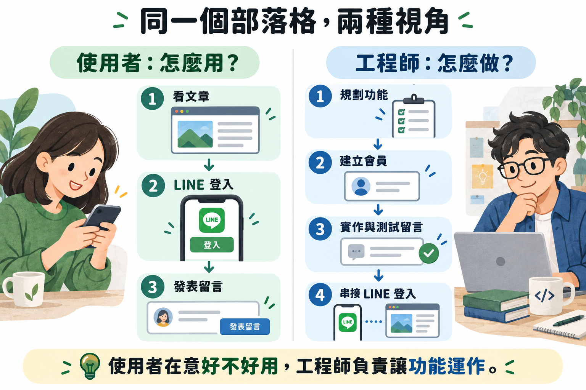
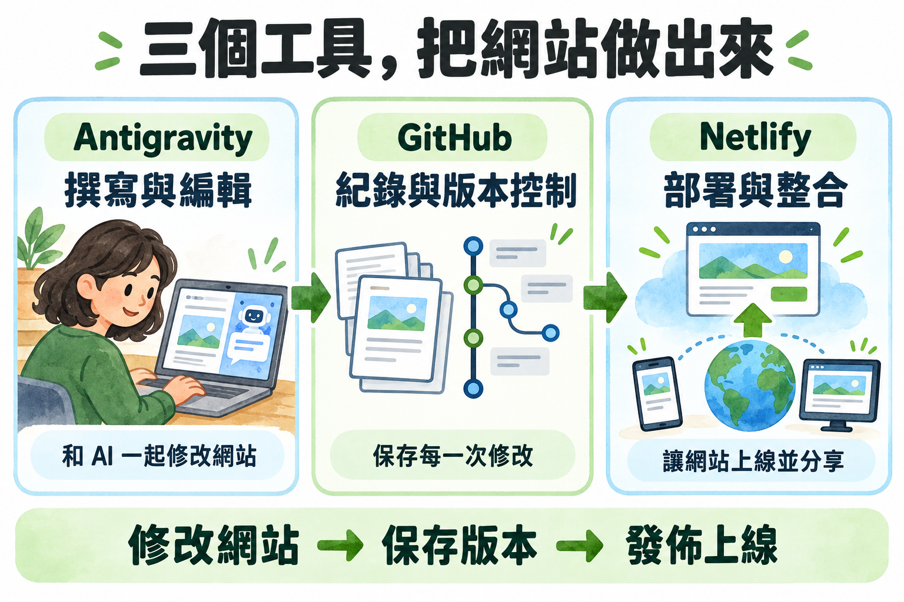
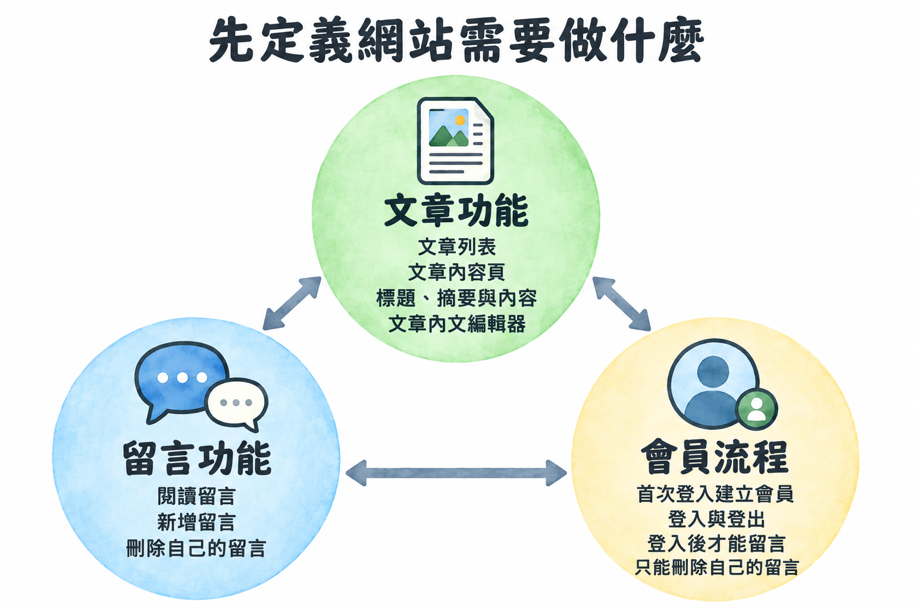
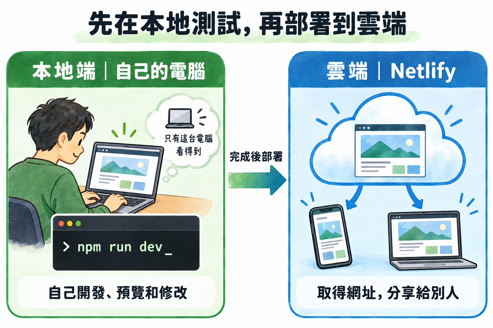

同一個部落格，兩種視角

點圖可放大查看。我們用 AI，把使用者的需求一步步變成可以操作的網站。
三個工具，把網站做出來

點圖可放大查看。用 Antigravity 修改網站，透過 Git 保存版本並推送至 GitHub，再由已連接專案的 Netlify 部署上線。
建立一個新的 Git Repository
Repository（專案倉庫）是放程式檔案、記錄每次修改的地方。這裡要建立自己的新專案，和前面的 Fork 課程範例是不同的事。
1. 從 GitHub 選擇 New repository
- 登入 GitHub，點右上角的 ＋。
- 在選單中點 New repository。
 圖 1：點右上角「＋」，再選「New repository」。點圖可放大。
圖 1：點右上角「＋」，再選「New repository」。點圖可放大。
2. 填寫 Repository 設定
- Owner：選擇你自己的 GitHub 帳號。
- Repository name：輸入
my-first-blog。
- Description：輸入
my first blog（可選填）。
- Choose visibility：選 Public，方便課程後續部署到 Netlify。公開代表其他人能看見程式碼，請勿放密碼或金鑰。
- Add README、Add .gitignore、Add license：依截圖保留預設（README 關閉、No .gitignore、No license）。
- 按右下角 Create repository。
 圖 2：照表單填寫。Owner 要改選你自己的帳號；Repository name 與 Description 可依課堂範例填寫。點圖可放大。
圖 2：照表單填寫。Owner 要改選你自己的帳號；Repository name 與 Description 可依課堂範例填寫。點圖可放大。
完成條件：GitHub 開啟新建好的 my-first-blog 專案頁，網址格式為 github.com/你的帳號/my-first-blog。
一個讓會員註冊、留言的部落格
所有人可以閱讀文章，會員登入後可以發表留言。
- 部落格定義：文章、閱讀、留言
- 會員定義：註冊、登入、權限
- 測試：確認資料與功能
- LINE Login：接入真實身分
今天的完成條件文章能閱讀、留言能保存、留言能辨識作者，最後使用 LINE 登入完成留言。
先定義網站需要做什麼

三大功能彼此關聯：文章承載留言，會員決定留言與刪除權限。點圖可放大查看。
怎麼拆解成任務？
從 1 到 6，由上往下做。完成一項、確認結果，再進入下一項。
-
01
文章功能
文章列表與內容頁
每篇文章包含標題、摘要與內容；列表顯示標題與摘要。
✓ 完成條件 點擊列表中的文章，能閱讀完整內文。
-
02
文章功能
文章內文編輯器
加入可以編輯並儲存文章內容的編輯器。
✓ 完成條件 儲存後重新開啟文章，能看到修改結果。
-
04
會員流程
建立會員、登入與登出
首次登入建立會員，再次登入找到同一位會員。
✓ 完成條件 會員不會重複建立；登出後回到未登入狀態。
-
05
會員流程
限制留言資格
未登入時提示登入，登入後才能新增留言。
✓ 完成條件 登出後再次送出留言，後端也會拒絕。
這六個任務，畫面、規則與資料怎麼配合？
對照上一頁的任務編號，看看每個功能需要哪些部分一起完成。
| 對應任務 | 前端：畫面與操作 | 後端：處理規則 | 資料庫：保存資料 |
|---|
| 01–02 文章 | 文章列表、內容頁、編輯器 | 處理文章讀取與儲存 | 標題、摘要、內文 |
|---|
| 留言區、輸入框、送出按鈕 | 檢查留言內容與登入身分 | 留言內容、作者、所屬文章與時間 |
|---|
| 04–05 會員與權限 | 登入／登出按鈕、提示訊息 | 確認身分，判斷是否能留言 | 會員資料 |
|---|
| 刪除按鈕、操作結果 | 確認是不是留言作者 | 刪除對應留言 |
|---|
按下按鈕不代表一定能操作；權限不通過，就不會修改資料庫。
前端按下按鈕 → 後端檢查權限 → 通過後更新資料庫 → 回傳結果、更新畫面。若權限不通過，拒絕操作並顯示提示。
你的 Agent 有沒有超能力？
Agent Skills 像是替 AI 加上專長與工作方法。下面兩個資源代表不同路線，可以先看介紹，再挑適合自己的。
它們是兩種技能資源的取向，不是互斥的 Agent 陣營。初學時先理解概念即可；安裝方式會依使用的 Agent 而不同。
延伸影片
在 YouTube 從 1:52 開始觀看延伸影片
本範例使用 Claude + Superpowers
在 Claude Code 中開啟外掛安裝介面，執行以下指令：
/plugin install superpowers@claude-plugins-official
安裝完成後重新啟動 Claude Code，開啟新對話，再繼續「Vibe Coding 吧！」。
Vibe Coding 吧！
把需求一次說清楚，再跟 AI 一起把任務逐項完成。以下 Prompt 可以直接貼到 Antigravity。
複製以下 Markdown Prompt，貼到 Claude Code 開始實作：
## 給 AI 的完整需求
### 除錯與修改原則
- 遇到非預期行為，先找出根本原因並附證據，確認後再修改，不做嘗試性修改。
- 一次只做一個修改並驗證；沒效就先還原，再試下一個，不可疊加。
- 每個保留的修改都要能證明必要（拿掉會重現問題），否則移除。
- 每個任務完成時逐檔列出修改與理由，與任務無關的修改要標示。
- 不用部署設定（netlify.toml 等）繞過本機工具的問題；非改不可先問我。
我要實作一個可以讓會員留言的部落格功能，共有三大功能：
### 三大功能
1. **文章功能：**文章列表、文章內容頁；每篇文章有標題、摘要與內容；提供文章內文編輯器。
2. **留言功能：**閱讀留言、新增留言、刪除自己的留言。
3. **會員流程：**首次登入建立會員、登入與登出、登入後才能留言、只能刪除自己的留言。
### 部署條件
這個網站先在本地端測試，之後會部署到 Netlify。我不想串接額外服務；請選用能搭配 Netlify 的前端、後端與資料庫。
請依照以下順序，把任務詳細拆解並逐一實作。每完成一項，先說明修改內容與驗收方式；確認完成條件後再進行下一項，不要一次跳過多個任務。
### 任務 1｜文章列表與內容頁
- 每篇文章包含標題、摘要與內容；文章列表顯示標題與摘要。
- 完成條件：點擊列表中的文章，能閱讀完整內文，並能返回列表。
### 任務 2｜文章內文編輯器
- 提供編輯文章標題、摘要與內文的方式，並能儲存修改。
- 完成條件：儲存後重新開啟文章，能看到最新內容。
### 任務 3｜閱讀與新增留言
- 每篇文章有自己的留言區，能閱讀留言並新增留言。
- 完成條件：留言屬於正確文章，儲存後仍能讀取。
### 任務 4｜會員建立、登入與登出
- 首次登入時建立會員，再次登入時辨識為同一位會員；提供登出功能。
- 完成條件：會員不會重複建立，登出後登入狀態結束。
### 任務 5｜只有登入會員能留言
- 未登入使用者不能新增留言；登入會員才能留言。
- 完成條件：未登入時後端拒絕留言並提示登入，不能只靠隱藏畫面按鈕阻擋。
### 任務 6｜會員只能刪除自己的留言
- 提供刪除本人留言的功能，後端要檢查留言作者。
- 完成條件：留言作者可以刪除；其他會員即使直接送出刪除請求也會被拒絕。
### 實作原則
先檢查目前專案架構並沿用現有技術。每一項完成後，告訴我如何操作驗收；遇到不確定的設計，先提出問題，不要自行假設。請勿將密碼、金鑰等秘密寫入前端程式碼。
本地端 vs 雲端
先在自己的電腦試做與修改，再把完成的網站部署到網路上。

本地端適合開發與測試；完成後再部署到 Netlify，取得網址分享。
在本地端啟動網站
- 用 Antigravity 開啟課程專案資料夾。
- 開啟這個資料夾的終端機（Terminal），輸入：
npm run dev
- 等終端機顯示本地網址（通常以
http://localhost: 開頭），按住 Command／Ctrl 再點網址，或複製到瀏覽器開啟。 - 要停止網站時，回到終端機按
Ctrl + C。
5. 推送到 GitHub
本地測試完成後，在同一個專案資料夾的終端機，依序執行：
git add .
git commit -m "完成第一版"
git push origin main
git add .：準備提交目前的檔案修改。git commit：把這次修改記成一個版本。git push origin main：把 main 分支的版本推送到 GitHub。
若你的分支不是 main，先執行 git branch --show-current 查看分支名稱，再把推送指令最後的 main 換成該名稱。推送成功後，確認 GitHub Repository 出現最新修改。
如果這個 Repository 已連接 Netlify，推送後 Netlify 會依照專案設定開始部署。
如果出現「missing script: dev」，代表這個專案沒有設定啟動指令；把訊息交給 AI，請它檢查專案設定並告訴你正確啟動方式。
串連到 Netlify
把 GitHub Repository 交給 Netlify，之後推送新版本，就能自動重新部署網站。
1. 開始新增 Netlify 專案
登入 Netlify，在專案頁點 Add new project。
 圖 1：點選 Add new project。點圖可放大。
圖 1：點選 Add new project。點圖可放大。
2. 選擇從 Git Repository 匯入
在新增專案方式中，選 Import a Git repository，再選 GitHub。
 圖 2：選擇 GitHub 作為程式碼來源。
圖 2：選擇 GitHub 作為程式碼來源。
3. 找到剛建立的 Repository
確認選對自己的 GitHub Owner，在搜尋欄輸入 my-first-blog，再點選該 Repository。
 圖 3：選擇自己帳號底下的 my-first-blog。圖中的 mozTheFuzz 是示範帳號，請改選自己的 Owner。
圖 3：選擇自己帳號底下的 my-first-blog。圖中的 mozTheFuzz 是示範帳號，請改選自己的 Owner。
4. 確認專案設定並部署
- Team：選擇課堂指定或自己要使用的 Netlify Team。
- Project name：設定一個可用的名稱；這會影響 Netlify 網址。
- Branch to deploy：先選
main，若你的程式放在其他分支，就選該分支。
- Build settings：確認建置命令與 Publish directory。若不確定，先沿用 Netlify 偵測的設定或請講師協助，不要猜填。
- 往下找到部署按鈕，點選開始部署。
 圖 4：檢查 Team、專案名稱、部署分支和建置設定，再開始部署。畫面下方還有更多設定。
圖 4：檢查 Team、專案名稱、部署分支和建置設定，再開始部署。畫面下方還有更多設定。
5. 等待部署完成，開啟網站
Netlify 會顯示建置或部署進度。等待狀態變成成功，再點專案提供的網站網址，確認頁面能正常開啟。
 圖 5：這張截圖顯示部署進行中；請等到部署成功後，再開啟網站網址。
圖 5：這張截圖顯示部署進行中；請等到部署成功後，再開啟網站網址。
之後如何更新？
在電腦修改程式，提交並推送到已連接的 GitHub 分支。Netlify 會依專案設定重新部署，完成後用同一個網址查看新版。
還沒看到網站內容？
確認 Repository 裡已有網站程式碼，且 Build settings 指向正確的建置方式與輸出資料夾。若部署失敗，打開 Deploys 查看錯誤紀錄，截圖請講師協助。
完成條件：Netlify 已連接自己的 my-first-blog Repository，部署成功，並能開啟網站網址。
串接 LINE Login
先讓 LINE Login 在本地端能測試，再把正式網址和環境變數設定到 Netlify。
先認識兩個網址
本地網址（localhost）只能在自己的電腦開啟；LINE 無法直接連回 localhost。ngrok 會提供一個 HTTPS 公開網址，暫時轉接到你的本地網站。上線後則改用 Netlify 的正式網址。
需要的工具與教學
第一階段｜建立本地可測試環境
- 在 LINE Developers 建立 Provider，再建立 LINE Login Channel；App type 選 Web app。
- 在電腦開啟專案，用第一個終端機啟動網站：
npm run dev
記下終端機顯示的本地連接埠（例如 3000）。
- 依 ngrok 官方教學安裝並登入 ngrok。Authtoken 是個人憑證，只在自己的終端機設定，不要貼到聊天、前端程式或 GitHub：
ngrok config add-authtoken <你的 ngrok Authtoken>
- 保持網站執行，另開第二個終端機，把 ngrok 連到剛才的本地連接埠：
ngrok http <本地連接埠>
- 複製 ngrok 顯示的 HTTPS 網址。從 LINE Login Channel 設定 Callback URL，填入「ngrok HTTPS 網址 + 專案實際的回呼路徑」。先請 AI 確認專案使用的回呼路徑，再照填；不要猜路徑。
- 將 Channel ID 和 Channel secret 放在本機伺服器環境變數（例如未提交到 Git 的
.env.local），由後端讀取。不要放在瀏覽器前端程式碼。
- 用 LINE 帳號測試登入、取消授權和登出，確認流程會回到 ngrok 網址下的本地網站。
免費 ngrok 網址可能在重新啟動後改變；網址變更時，記得同步更新 LINE Login Channel 的本地 Callback URL。
第二階段｜設定遠端 Netlify 環境
- 把已測試的程式推送到 GitHub，確認 Netlify 連接正確的 Repository 和部署分支。
- 在 Netlify 專案的 Environment variables 設定相同的 Channel ID 與 Channel secret。秘密值留在伺服器環境變數，不要提交到 Repository。
- 到 LINE Login Channel 的 Callback URL 加入 Netlify 正式網址與同一條回呼路徑，例如
https://你的網站.netlify.app/專案回呼路徑。本地測試網址和正式網址可以分別登記。
- 儲存環境變數後，重新部署 Netlify 專案，再用正式網站網址測試登入、取消授權與登出。
完成條件：本地 ngrok 測試與 Netlify 正式網址都能完成 LINE Login；正式環境不使用開發測試會員入口。
遇到問題，怎麼讓 AI 協助修正？
描述操作與預期
「我用會員 B 刪除 A 的留言，預期應該拒絕。」
描述實際結果
「實際上留言被刪掉了。請檢查後端權限。」
交給 AI 的需求請根據這個重現步驟定位原因，提出修正並說明如何驗證。修正後重新檢查未登入、作者本人及其他會員的操作結果。
修正後，再做同一個測試確認結果。
把測試身分換成 LINE 身分
網站入口按下 LINE 登入
LINE 授權使用者登入並同意
後端驗證處理授權回傳
會員登入找到會員或首次建立
LINE 確認外部身分，網站保存自己的會員資料與權限。
首次登入完成會員註冊；再次登入找到同一位會員。
完成設定，跑一次真正的登入與留言
交給 AI 的需求請將會員登入串接 LINE Login，列出 channel、回呼網址與後端環境變數設定。後端完成身分驗證並維持登入狀態，首次登入建立會員。請處理取消授權，並關閉正式環境的測試登入。
整合驗收
首次登入不漏建會員。
再次登入不重複建立。
登入後能留言，登出後不能。
持續交付
提交並推送新版本。
確認 Netlify 部署結果。
在線上網址再跑一次流程。
第一版完成，就先部署一次
Git + GitHub
保存一次修改版本。
把程式碼推送到遠端專案。
Netlify
連接 GitHub 專案。
依架構設定建置與環境變數。
取得網站網址，從手機或另一個瀏覽器開啟。
交給 AI 的需求請依現有專案整理 Netlify 部署步驟，列出前端、後端與資料庫需要的設定。秘密值放在後端環境變數，並告訴我如何確認部署成功。